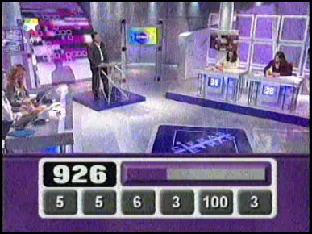
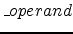

We want to solve the classical problem of obtaining a given target number
starting from a set of initial numbers according to the following
rules:
- All numbers involved in the problem are positive integers,
and so must be any intermediate result obtained for any
operation. Thus, operations that lead to non integer or
non positive numbers are strictly forbidden (we shall not
consider truncation or rounding results,
nor anything else like that).
- We can do any of the four elemental arithmetical operations:
addition, multiplication, subtraction, and division.
- Each number may be used once at most: when we take two numbers
and operate them, these numbers may not be used again in
further operations (but the result of this operation may,
and same considerations apply to this new number).
- There is no obligation to make use of all of the initial
numbers.
We shall make the following assumptions on the input data:
- For any target number T, it will always hold that:
0 < T < 2000.
- For any initial number I, it will always hold that:
0 < I < 200.
- There will always be at least two initial numbers and seven at most.
- We shall not consider trivial problem cases, i.e. cases in which the target number is already contained in the initial ones.
In order to make unique the solution
provided by the program, we shall also make the following
assumptions on the solution that we will consider as correct:
The program should provide the solution that
reaches the target in the minimum number of operations. If there
is more than one solution with the minimum number of operations,
we will decide which one to take according to the characteristics
of the first operation in which they differ. The next rules will
apply.
- For two operations that are actually the same one, it will be preferred the one whose left-side operand is greater than, or equal to, the right-side operand. For example, operation ``
10 x 5 = 50" will take priority over ``
5 x 10 = 50".
- For operations involving two different operators, it will be preferred the one whose operator has the highest precedence, defined as follows:
- Addition (highest)
- Multiplication
- Subtraction
- Division (lowest)
- For operations with the same operator, it will be preferred the one involving the number whose position is lower in
the order in which they were given in the input (it appears first). If this first number may appear in two different operations of same precedence, same criterion should be applied for the second operand. New numbers generated by operations are assumed to be placed at the beginning of this ordered list.
The input consists of a set of lines. Each line represents a test case, and it will be given in the
following format:
TNI1...IN
T is the target number, N is the number of initial numbers, and
I1...IN are the initial numbers themselves. All numbers are separated by a single blank space. There will be no trailing/leading blank spaces at
the beginning/end of any input line. A final line with a single zero marks the end of the input. This last line must not be processed.
For each input case (input line), the program should produce a line with the message:
No solution
if the target number cannot be obtained
from the initial numbers, or a set of lines with the sequence of
operations that leads from the initial numbers to the target,
taking into consideration the previous criteria. Each operation
must be expressed in the following format:
left operator
right = result
where
left and
right
represent the numbers involved in the operation, result
is the result of the operation, and operator is a single
character that represents the operation carried out, and it must
be taken from the following ones:
'+' : addition
'x' : multiplication
'-' : subtraction
'/' : division
For each input case, the last line of its
solution must end with a `<-'
symbol, indicating that this is the last operation that gives the
target number as result. In all cases, there must be one blank
space (and only one) between each printed item and the following
one. There should be no leading/trading blank spaces at the
beginning/end of any output line. Each line must end with an end
of line mark, and there should appear no blank lines at the
output.
811 6 7 15 19 25 2 3
911 6 1 2 3 4 5 6
1897 7 33 2 11 25 7 17 13
911 7 7 11 23 27 17 7 2
0
15 + 7 = 22
22 x 19 = 418
418 x 2 = 836
836 - 25 = 811